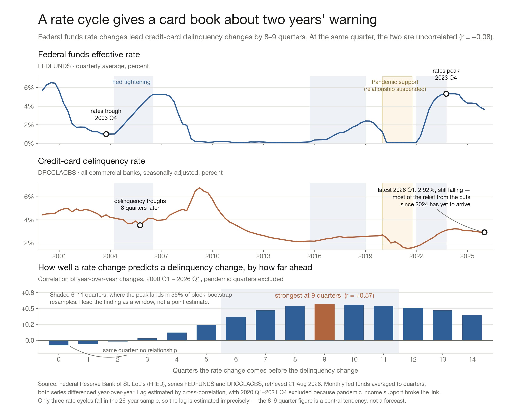

Published 2026-08-21 18:58 UTC·from the Claude Code session that produced it
Rate cycles lead card delinquency by about two years
An analysis of the federal funds rate against credit-card delinquency at all commercial banks, 2000 Q1 to 2026 Q1 — 105 aligned quarters of Federal Reserve data. Prepared 21 August 2026 for the credit-risk team.

Federal funds rate and credit-card delinquency, 2000–2026, with the estimated lag between them
The finding
Changes in the federal funds rate lead changes in credit-card delinquency by roughly eight to nine quarters. In the same quarter the two are effectively unrelated: the correlation of year-over-year changes at lag zero is −0.08. The entire relationship lives in the lag. That cuts both ways for a risk team — the policy rate carries real information about the book, but it is information about the book two years from now, not this quarter, and reading it as a coincident indicator will find nothing.
Results
The lead is 8–9 quarters. Cross-correlation of year-over-year changes peaks at 9 quarters (r = +0.57) with the pandemic quarters excluded, and at 8 quarters (r = +0.42) on the full sample. Repeating the test on non-overlapping single-quarter differences also peaks at 9 quarters, so the result is not an artifact of the differencing window.
There is no contemporaneous signal. Correlation is −0.08 at lag 0 and stays near zero through three quarters (+0.03 at lag 3). It only becomes material from five quarters out (+0.24) and stays above +0.50 across lags 8 through 12.
The estimate is imprecise, and should be quoted as a window. Twenty-six years contains only three rate cycles. A 12-quarter moving-block bootstrap (2,000 resamples) puts the peak between 6 and 11 quarters in 55% of resamples, with an 80% interval spanning 1 to 13 quarters. "About two years" is defensible; "9 quarters" as a precise constant is not.
Cycle turning points agree with the correlation. Dating the cycles independently of the correlation gives a median lag of 8 quarters from the rate trough to the delinquency trough.
2020–2021 is excluded because the relationship genuinely broke. Pandemic income support drove delinquency to a record low of 1.53% in 2021 Q3 while the policy rate sat at zero — the opposite of the historical pattern. Leaving those quarters in weakens the peak correlation from +0.57 to +0.42 without moving it much.
Cycle
Rates trough
Delinquency trough
Lag
2003–2006
2003 Q4 (1.00%)
2005 Q4 (3.54%)
8 quarters
2015–2019
2014 Q3
2021 Q3
distorted by the pandemic
2021–2023
2021 Q2
2021 Q3
distorted by the pandemic
The 2003–2006 cycle is the only one in the sample that runs start to finish without a pandemic in it, and it dates the lag at exactly the 8 quarters the correlation finds. The two later cycles are reported for completeness rather than as evidence.
What follows for a risk team
Extend the horizon on which the policy rate is used. Most loss forecasts run four to six quarters. On this evidence the rate signal arrives before that window opens and lands after it closes, so a rate-aware forecast needs to reach out to eight quarters to capture it at all. That change in horizon is the practical consequence of the finding.
Read the current position as relief still in transit. Rates peaked in 2023 Q4 at 5.33% and are 1.69 points lower now. Delinquency peaked two quarters later at 3.22% and has fallen to 2.92%, already below its 2000–2019 average of 3.72%. On an eight-to-nine quarter lag, most of the effect of the cuts made through 2025 and 2026 has not yet reached the book; absent a new shock the improvement should continue into 2027.
Treat the start of the next tightening cycle as the trigger. The quarter in which hikes begin is roughly two years ahead of the turn in the book. That is enough lead time to tighten underwriting or reprice deliberately rather than reactively, which is the operational value of the whole exercise.
Do not run this as a forecast on its own. It is one macro prior with a wide interval, estimated on three cycles of industry-aggregate data. It is useful for sizing and timing a stress narrative and for sanity-checking a model that disagrees with it. It is not a substitute for a loss model built on obligor-level data, and the confidence interval should travel with the number wherever it is quoted.
Source: Federal Reserve Bank of St. Louis (FRED), series FEDFUNDS (Federal Funds Effective Rate, monthly, averaged to quarters) and DRCCLACBS (Delinquency Rate on Credit Card Loans, All Commercial Banks, quarterly, seasonally adjusted), both retrieved 21 August 2026. Delinquency data runs through 2026 Q1; the rate series through July 2026. Analysis and chart generated in a Claude Code session.